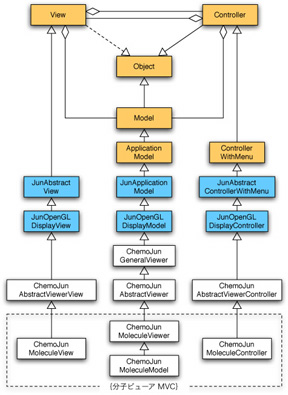
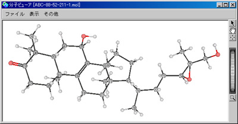
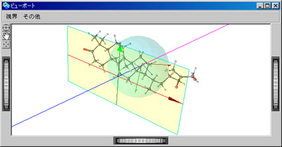

3次元グラフィックスを司るビューファインダのMVC（JunOpenGLDisplayModel, JunOpenGLDisplayView, JunOpenGLDisplayController）を継承して分子ビューアのMVC（ChemoJunMolecule{Viewer|Model}, ChemoJunMoleculeView, ChemoJunMoleculeController）が作成されています。
|  |
| 分子ビューアの構造 |
視線・上方ベクトル・右方ベクトル・視野角・描画投影面などの視体積を操作するためのフル機能を有します。ビューファインダのメタビューであるビューポートをレンダリングする機能も内包されています。視体積はビューポートを見るほうがわかりやすいでしょう。
|  |
|  |
| 分子ビューアとそのビューポート |
分子ビューアの中に描画されるオブジェクトは、分子オブジェクト（ChemoJunMoleculeObject）より提供される3次元オブジェクト（JunOpenGL3dObject）になります。それに対して、拡大縮小・回転・平行移動を容易に行うことが可能です。基本的に分子の表示に関係する描画設定と分子ファイルの読み書き以外は、すべてじゅんのライブラリによって用意されている機能を継承しているに過ぎません。